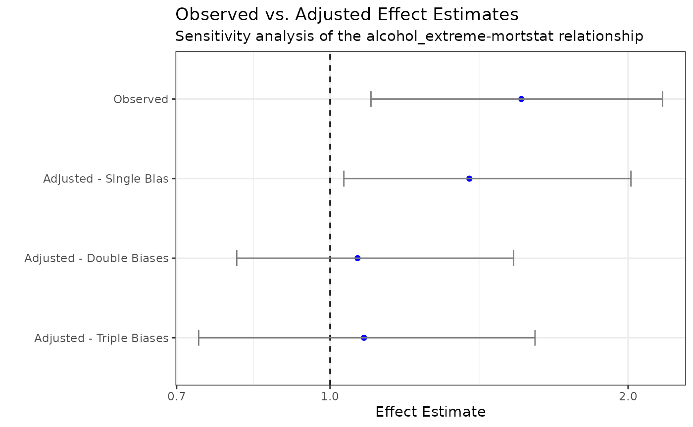

Introduction
Epidemiologic studies often face multiple sources of bias, including
confounding, measurement error, and selection bias. Investigators
typically address these biases by speculating on the direction of their
effect or by adjusting for a single source of bias. The
multibias package provides a framework for simultaneously
adjusting for multiple sources of bias.
This vignette demonstrates how to use multibias to
analyze the relationship between alcohol consumption and mortality using
data from the National Health and Nutrition Examination Survey (NHANES).
We’ll progressively add different types of bias adjustments to show how
each affects our estimates and how they can be combined for a more
comprehensive analysis.
Setup
For this demonstration, we’ll use the 2013-2018 National Health and Nutrition Examination Survey (NHANES) data linked to the CDC’s 2019 public-use mortality data. This dataset provides a rich source of information including:
- Demographics
- 24-hour dietary recall
- Alcohol consumption patterns
- Smoking history
- Mortality outcomes
nhanes <- read.csv("nhanes.csv")Data Preparation and Exploration
We’ll be assessing the risk of alcohol intake on all-cause mortality, specifically comparing “extreme” drinkers to “non-extreme” drinkers. Let’s first understand our data and create our exposure variable.
Creating the Exposure Variable
We’ll anchor our classification based on the US Dietary Guidelines for Americans (USDGA) suggested limit:
- 14 g/day for women
- 28 g/day for men
Participants are classified as “extreme drinkers” if they reported drinking more than 1.5x these guidelines.
Data Characteristics
Let’s examine the key characteristics of our dataset:
exposure_outcome_table <- nhanes_filtered |>
group_by(alcohol_extreme, mortstat) |>
summarize(count = n()) |>
ungroup() |>
mutate(proportion = count / sum(count))
#> `summarise()` has grouped output by 'alcohol_extreme'. You can override using
#> the `.groups` argument.
# Distribution of Exposure and Outcome:
print(exposure_outcome_table)
#> # A tibble: 4 × 4
#> alcohol_extreme mortstat count proportion
#> <dbl> <int> <int> <dbl>
#> 1 0 0 8412 0.856
#> 2 0 1 281 0.0286
#> 3 1 0 1089 0.111
#> 4 1 1 44 0.00448
demographic_table <- nhanes_filtered |>
group_by(alcohol_extreme) |>
summarize(
n = n(),
age_mean = mean(age),
age_sd = sd(age),
gender_prop = mean(gender_female)
) |>
mutate(
alcohol_extreme = if_else(
alcohol_extreme == 1, "Extreme", "Non-extreme"
)
)
# Demographic Characteristics by Exposure Status:
print(demographic_table)
#> # A tibble: 2 × 5
#> alcohol_extreme n age_mean age_sd gender_prop
#> <chr> <int> <dbl> <dbl> <dbl>
#> 1 Non-extreme 8693 46.2 17.8 0.486
#> 2 Extreme 1133 45.1 15.8 0.454Multiple Bias Analysis
We’ll now progressively adjust for three types of bias:
- Uncontrolled confounding (smoking status)
- Exposure misclassification (alcohol underreporting)
- Selection bias (NHANES sampling weights)
1. Adjusting for Uncontrolled Confounding
Smoking is a strong confounder in the relationship between alcohol consumption and mortality. Smokers are more likely to be heavy drinkers, and smoking independently increases mortality risk. Our observed data doesn’t account for this, potentially leading to biased estimates.
# Create observed data object with uncontrolled confounding bias
df_obs1 <- data_observed(
data = nhanes_filtered,
bias = "uc",
exposure = "alcohol_extreme",
outcome = "mortstat",
confounders = c("age", "gender_female")
)
summary(df_obs1)
#> Note: Estimates are exponentiated (odds ratios) for binary outcomes
#> # A tibble: 4 × 7
#> term estimate std.error statistic p.value conf.low conf.high
#> <chr> <dbl> <dbl> <dbl> <dbl> <dbl> <dbl>
#> 1 (Intercept) 0.000364 0.309 -25.6 4.34e-145 0.000195 0.000655
#> 2 alcohol_extreme 1.56 0.173 2.58 9.94e- 3 1.10 2.17
#> 3 age 1.09 0.00452 18.1 3.25e- 73 1.08 1.10
#> 4 gender_female 0.684 0.120 -3.17 1.54e- 3 0.539 0.864Running the summary() method on our
data_observed object prints the logistic regression results
from the model estimating the association between extreme alcohol
consumption and mortality, adjusting for age and gender. This will serve
as our reference point for comparing bias-adjusted estimates. Our base
model suggests that extreme alcohol consumption is associated with a
1.6-fold increase in mortality risk (95% CI: 1.1, 2.17), after adjusting
for age and gender.
To adjust for the bias here, we’ll leverage a validation dataset; for a fraction of our cohort of patients, we have smoking information available.
# Create validation data with smoking information
df_temp1 <- nhanes_filtered |>
filter(!is.na(smoked_100cigs))
df_val1 <- data_validation(
data = df_temp1,
true_exposure = "alcohol_extreme",
true_outcome = "mortstat",
confounders = c("age", "gender_female", "smoked_100cigs")
)
# Perform bias adjustment
set.seed(1234)
uc_adjusted <- multibias_adjust(
df_obs1,
df_val1,
bootstrap = TRUE,
bootstrap_reps = 100
)
# Uncontrolled Confounding Adjusted Results:
print(uc_adjusted)
#> $estimate
#> [1] 1.382805
#>
#> $std.error
#> [1] 0.2386598
#>
#> $ci
#> [1] 1.032700 2.0133232. Adding Exposure Misclassification Adjustment
Self-reported alcohol consumption is often underreported due to social stigma. We’ll adjust for this by assuming that certain demographic groups (wealthy, college-educated individuals) are more likely to under-report their alcohol consumption.
# Create observed data object with both biases
df_obs2 <- data_observed(
data = nhanes_filtered,
bias = c("em", "uc"),
exposure = "alcohol_extreme",
outcome = "mortstat",
confounders = c("age", "gender_female")
)
# Create validation data with adjusted alcohol consumption
df_temp2 <- nhanes_filtered |>
filter(!is.na(smoked_100cigs)) |>
mutate(
# Assume 50% higher consumption for high SES individuals
alcohol_adj = if_else(
income == "$100,000 and Over" | education == "College graduate or above",
alcohol_day_total * 1.5,
alcohol_day_total
)
) |>
mutate(alcohol_extreme_adj = case_when(
alcohol_adj > 14 * 1.5 & gender_female == 1 ~ 1,
alcohol_adj > 28 * 1.5 & gender_female == 0 ~ 1,
TRUE ~ 0
))
df_val2 <- data_validation(
data = df_temp2,
true_exposure = "alcohol_extreme_adj",
true_outcome = "mortstat",
confounders = c("age", "gender_female", "smoked_100cigs"),
misclassified_exposure = "alcohol_extreme"
)
# Perform bias adjustment
set.seed(1234)
uc_em_adjusted <- multibias_adjust(
df_obs2,
df_val2,
bootstrap = TRUE,
bootstrap_reps = 100
)
# Exposure Misclassification & Confounding Adjusted Results:
print(uc_em_adjusted)
#> $estimate
#> [1] 1.066144
#>
#> $std.error
#> [1] 0.1963944
#>
#> $ci
#> [1] 0.8050004 1.53248973. Adding Selection Bias Adjustment
NHANES uses a complex sampling design with oversampling of certain demographic groups. This can create selection bias if both the exposure (alcohol consumption) and outcome (mortality) are related to the selection probability. We’ll adjust for this using the NHANES sampling weights.
# Create observed data object with all three biases
df_obs3 <- data_observed(
data = nhanes_filtered,
bias = c("em", "uc", "sel"),
exposure = "alcohol_extreme",
outcome = "mortstat",
confounders = c("age", "gender_female")
)
# Prepare data for selection bias adjustment
df_temp3a <- nhanes_filtered |>
filter(!is.na(smoked_100cigs)) |>
mutate(
alcohol_adj = if_else(
income == "$100,000 and Over" | education == "College graduate or above",
alcohol_day_total * 1.5,
alcohol_day_total
),
alcohol_extreme_adj = case_when(
alcohol_adj > 14 * 1.5 & gender_female == 1 ~ 1,
alcohol_adj > 28 * 1.5 & gender_female == 0 ~ 1,
TRUE ~ 0
),
# Combine survey weights
weight = if_else(weight_day2 == 0, weight_day1, weight_day2)
)
# Create selection indicator based on sampling weights
set.seed(1234)
selected_sample <- sample(
x = df_temp3a$seqn,
size = nrow(df_temp3a),
replace = TRUE,
prob = df_temp3a$weight
)
df_selected_sample <- data.frame()
for (id in selected_sample) {
df_selected_sample <- rbind(
df_selected_sample,
df_temp3a[df_temp3a$seqn == id, ]
)
}
df_selected_sample$selection <- 1
df_not_selected_sample <- df_temp3a[!(df_temp3a$seqn %in% selected_sample), ]
df_not_selected_sample$selection <- 0
df_temp3b <- rbind(df_selected_sample, df_not_selected_sample)
# Create validation data with selection information
df_val3 <- data_validation(
data = df_temp3b,
true_exposure = "alcohol_extreme_adj",
true_outcome = "mortstat",
confounders = c("age", "gender_female", "smoked_100cigs"),
misclassified_exposure = "alcohol_extreme",
selection = "selection"
)
# Perform final bias adjustment
set.seed(1234)
final_adjusted <- multibias_adjust(
df_obs3,
df_val3,
bootstrap = TRUE,
bootstrap_reps = 100
)
# Triple Bias Adjusted Results:
print(final_adjusted)
#> $estimate
#> [1] 1.082248
#>
#> $std.error
#> [1] 0.1913425
#>
#> $ci
#> [1] 0.7367791 1.6108455Visualize Results
Let’s visualize the sensitivity analysis to observe how our estimates change with each bias adjustment:
multibias_plot(
df_obs1,
multibias_result_list = list(
"Adjusted - Single Bias" = uc_adjusted,
"Adjusted - Double Biases" = uc_em_adjusted,
"Adjusted - Triple Biases" = final_adjusted
),
log_scale = TRUE
)
Discussion
This analysis demonstrates how multiple sources of bias can affect the estimated relationship between alcohol consumption and mortality:
Uncontrolled Confounding: Adjusting for smoking status reduced the odds ratio from 1.56 to 1.38, suggesting that part of the observed association was due to the confounding effect of smoking.
Exposure Misclassification: Further adjustment for potential underreporting of alcohol consumption reduced the odds ratio to 1.07, indicating that measurement error may have led to an overestimate of the true effect.
Selection Bias: The final adjustment for NHANES sampling weights had minimal impact on the estimate, suggesting that selection bias may not be a major concern in this analysis.
These results highlight the importance of considering multiple
sources of bias simultaneously. The multibias package
provides a flexible framework for such analyses, allowing researchers to
incorporate various assumptions about bias mechanisms and assess their
impact on study results.